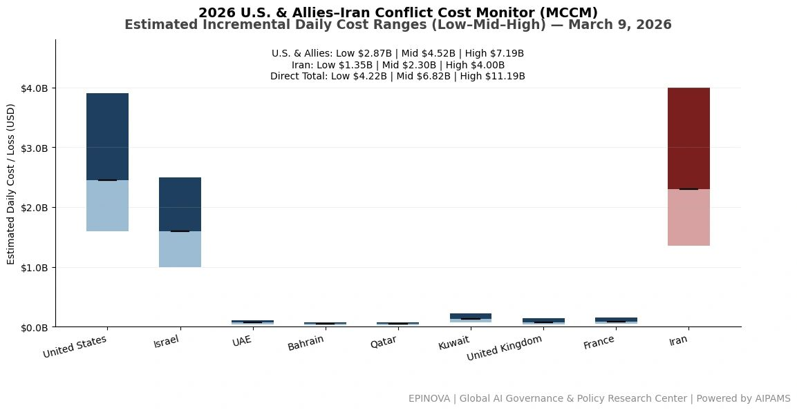
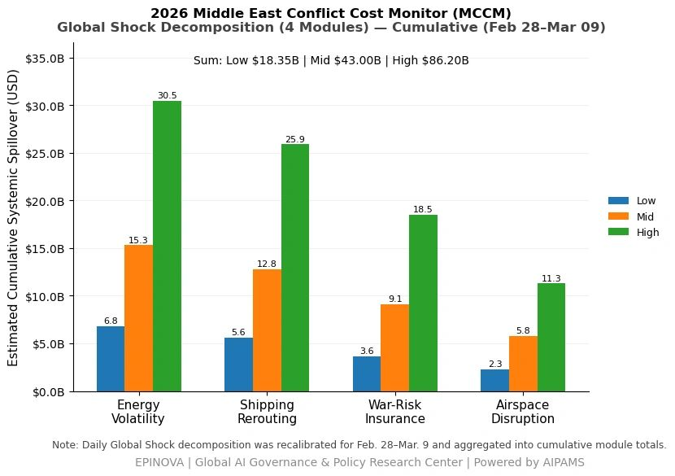

2026 U.S. & Allies–Iran Conflict Cost Monitor (MCCM): March 9
Powered by AIPAMS
Introduction
The 2026 Middle East Conflict Cost Monitor (MCCM) provides an event-driven, scenario-based assessment of daily conflict-related expenditures and losses across major state actors involved in the crisis. Using a structured low–mid–high estimation framework, the series aggregates publicly available operational indicators, force posture changes, strike intensity proxies, reported material damage, and infrastructure disruptions to produce comparable daily cost ranges.
The framework distinguishes between (1) direct military expenditures and asset losses, (2) infrastructure and energy-sector disruption costs, and (3) systemic market spillovers (“Global Shock”), which are reported separately from war-specific accounts.
MCCM is designed as a rolling monitoring instrument rather than a definitive accounting ledger. All estimates are expressed in current U.S. dollars (USD) and reflect bounded scenario approximations intended for comparative analysis and policy discussion. High-range estimates may incorporate upper-bound scenario adjustments where reported high-value asset losses remain under verification. Estimates are updated as verification improves and may be revised retroactively.

Note:
Ranges reflect scenario-bounded estimates. Low = minimum confirmed observable losses. Mid = most probable range based on publicly available reporting and operational cost parameters. High = upper-bound scenario including reported but not independently verified high-value asset losses. Figures exclude Global Shock (systemic market spillovers). All values are incremental (24-hour estimate).

Note:
Cumulative totals represent aggregated daily scenario ranges. High range includes scenario-based upper-bound adjustments (e.g., reported strategic asset losses). Figures exclude Global Shock. Values rounded; subject to revision as verification improves.

Note:
Global Shock represents cumulative systemic spillovers during the reporting period and is decomposed into four modules: Energy Volatility, Shipping Rerouting, War-Risk Insurance Premiums, and Airspace Disruption. These modules capture major economic and logistical externalities associated with regional conflict escalation. Global Shock is reported separately and is not included in direct military cost estimates.
Selected References:
Al Jazeera. (2026, March 1–9). Israel–Iran conflict updates and live news coverage.
https://www.aljazeera.com
Associated Press. (2026). Israel–Iran war: missile strikes, regional escalation and military responses.
https://apnews.com
BBC News. (2026). Israel–Iran conflict: strikes across the Middle East.
https://www.bbc.com/news
Birol, F. (2026). IEA emergency oil stock release discussions amid Middle East crisis. International Energy Agency.
https://www.iea.org
Bloomberg. (2026). Oil prices surge as Israel–Iran war threatens Gulf energy flows.
https://www.bloomberg.com
Center for Strategic and International Studies (CSIS). (2024). Missile defense cost and interceptor economics.
https://www.csis.org
Defense News. (2026). U.S. missile defense intercept costs and operational capacity.
https://www.defensenews.com
Financial Times. (2026, March 9). G7 considers emergency oil reserve release amid Iran war.
https://www.ft.com
FlightGlobal. (2025). Israeli Air Force strike capability and aircraft fleet composition.
https://www.flightglobal.com
Global Times. (2026). Middle East tensions escalate as Israel strikes Iran targets.
https://www.globaltimes.cn
International Energy Agency. (2023). Oil market report and strategic petroleum reserves.
https://www.iea.org/reports/oil-market-report
Jane’s Defence Weekly. (2024). Iran missile capabilities and regional strike ranges.
https://www.janes.com
Jane’s Intelligence Review. (2025). Regional missile balance in the Middle East.
https://www.janes.com
Lloyd’s List Intelligence. (2026). Shipping rerouting and tanker traffic through the Strait of Hormuz.
https://lloydslist.maritimeintelligence.informa.com
MarineTraffic. (2026). Tanker traffic analysis and AIS shipping movements.
https://www.marinetraffic.com
New York Times. (2026). Israel strikes Iran as regional war intensifies.
https://www.nytimes.com
Reuters. (2026). Israel–Iran war: missile exchanges, energy market impacts, and regional escalation.
https://www.reuters.com
South China Morning Post. (2026). Middle East conflict and implications for Asia security.
https://www.scmp.com
Stockholm International Peace Research Institute (SIPRI). (2024). Military expenditure database.
https://www.sipri.org
The Guardian. (2026). Israel launches air strikes across Iran amid widening war.
https://www.theguardian.com
The Washington Post. (2026). U.S. and allies respond to escalating Iran conflict.
https://www.washingtonpost.com
U.S. Department of Defense. (2025). Missile defense agency budget overview.
https://www.defense.gov
U.S. Energy Information Administration. (2025). Global oil supply and strategic reserves.
https://www.eia.gov
U.S. Navy Institute (USNI News). (2026). U.S. naval posture in the Middle East amid Iran conflict.
https://news.usni.org
Wall Street Journal. (2026). Oil markets and shipping disruptions during the Iran conflict.
https://www.wsj.com
Yonhap News Agency. (2026, March 9). South Korea and U.S. launch Freedom Shield military exercise.
https://en.yna.co.kr
Israeli Channel 12 News. (2026). Israel prepares for extended conflict with Iran.
https://www.mako.co.il/news-channel12
Iran Ministry of Foreign Affairs. (2026). Official statements regarding missile incidents involving Turkey, Azerbaijan, and Cyprus.
https://www.mfa.gov.ir
Share this post: